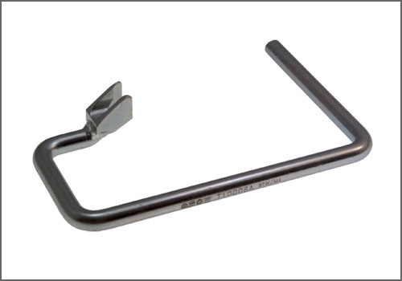

Brake Pedal Assy: Tools and Equipment
Brake Push Rod Release Tool
AST tool# T 10006 A

Used to separate the brake servo push rod from the brake pedal. 1998 - 2008 New Beetle and more.
- Made in Germany
- Call AST for Pricing
Contact AST for pricing.
Assenmacher Specialty Tools
1-800-525-2943